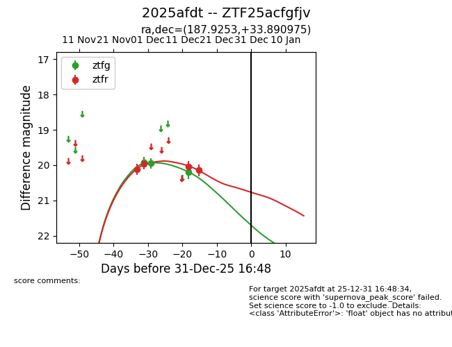
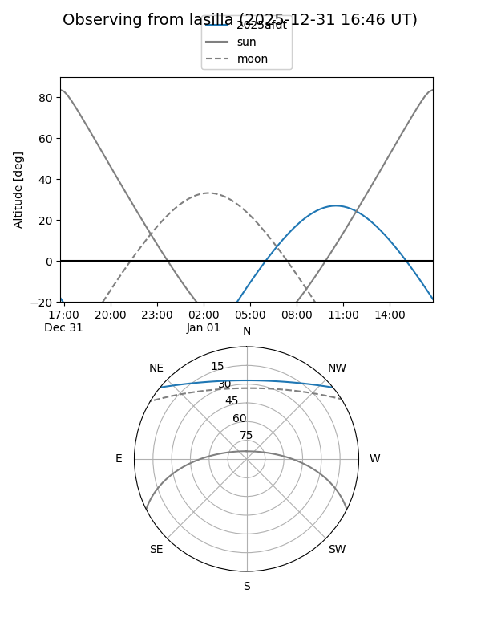
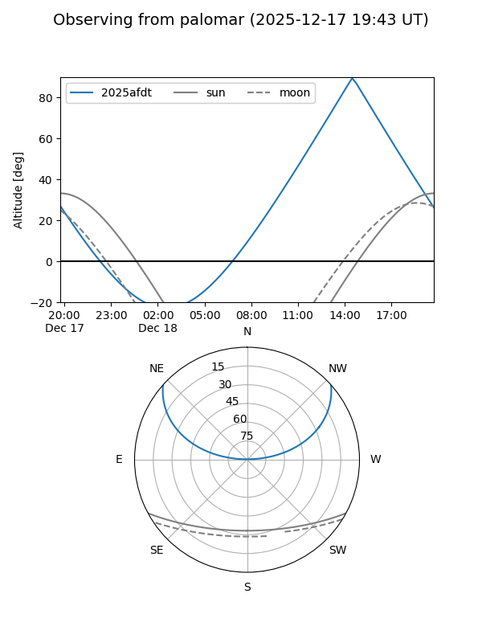
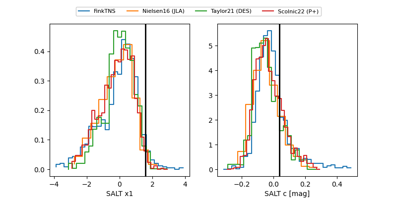

2025afdt
Target 2025afdt at 2025-12-18 11:17
Aliases and brokers:
FINK: fink-portal.org/ZTF25acfgfjv
Lasair: lasair-ztf.lsst.ac.uk/objects/ZTF25acfgfjv
ALeRCE: alerce.online/object/ZTF25acfgfjv
TNS: wis-tns.org/object/2025afdt
YSE: ziggy.ucolick.org/yse/transient_detail/2025afdt
alt names
ZTF25acfgfjv (ztf,fink_ztf)
2025afdt (tns,yse)
Coordinates:
equatorial (ra, dec) = 187.9253,+33.89098
equatorial (HMS+DMS) = 12:31:42.07,+33:53:27.51
galactic (l, b) = (153.8608,+82.01503)
Photometry
last ztfg=20.20, ztfr=20.14
3 ztfg, 4 ztfr detections
Lightcurve

Visibility


Additional plots
